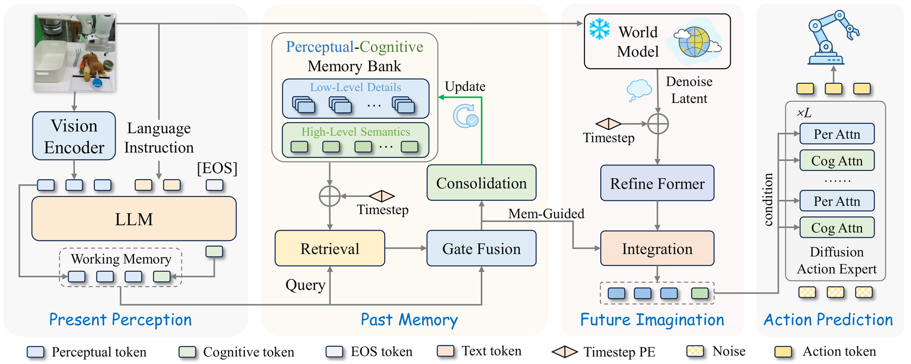
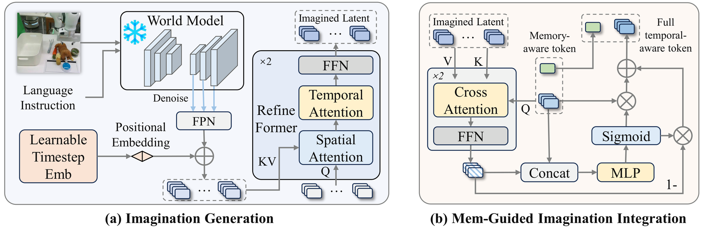

能拿到：一套「双流记忆 bank + latent 未来想象」如何在不改动作头接口的前提下，把过去与未来压成同一组 token 去条件扩散策略；代价是每步多一次 1.5B 视频扩散前向，RTX 4090 上单次前向从 0.194 s 涨到 0.241 s，显存 16.6 → 21.7 GB。
- 最小可复用件
- 「冻结的 SVD 部分去噪 → FPN 多尺度特征 → learnable query 时空压缩 → 门控注入」这条 latent 想象支路，约 0.05 s / 步，可以独立插进任何带 action chunk 的扩散或 flow 策略。
- 主要风险
- 想象是单步前向里顺手做的，没有不确定性估计，也没有校准手段；对「过去发生过什么」类任务（按键是否已按）完全无用，只能靠 bank。真机分数是 step-wise 打分、每任务 10–15 trials，方差不容忽视。
- 复现门槛
- 7B Prismatic VLM（LLaMA-7B）+ 约 300M 扩散动作头 + 1.5B SVD 世界模型；世界模型需按机器人域单独适配 20k–40k 步；训练 8\(\times\)A100/H20、全局 batch 208–256、lr 2e-5。
1 核心摘要
问题出在时序建模的不对称：主流 VLA（OpenVLA、\(\pi_{0}\) 一类）只看当前观测，而长时程操控既需要「刚才发生了什么」，也需要「接下来会怎么变」。作者给出的两个失败模式很具体——按键任务在按下前后画面几乎没有差别，单帧策略无法判断是否已按，于是反复按；传送带抓取任务里物体在动，没有前瞻就只能抓早或抓晚。
MemoryVLA++ 的做法是在前作 MemoryVLA 的「工作记忆 + 情景记忆 bank」之上，再并联一路未来想象。当前 RGB 与语言指令经 7B Prismatic VLM 编成 perceptual token \(p\)（SE-bottleneck 压缩的细粒度视觉）与 cognitive token \(c\)（LLaMA-7B 在 EOS 位的高层语义），二者构成 working memory；它作为 query 去 Perceptual-Cognitive Memory Bank（PCMB）里做带时间步位置编码的 cross-attention 检索，检索结果经 sigmoid 门控与当前 token 融合，得到 \(\tilde p / \tilde c\)；bank 满容量时按余弦相似度合并最相似的相邻两项（redundancy-aware consolidation）。同时，一个在操控视频上适配过的 1.5B SVD 世界模型对当前观测+指令做部分去噪，取 UNet 多尺度中间特征经 FPN 聚合成 latent token，再由 learnable query 做空间-时间注意力压缩成 \(z_{\mathrm{img}}\)；\(\tilde p\) 再 cross-attend 到 \(z_{\mathrm{img}}\) 并门控融合，得到 \(\bar p\)。\(\{\bar p,\tilde c\}\) 就是「全时序 token」，去条件一个 DiT/DDIM 扩散动作专家输出动作序列。
关键数字：仿真上 Libero 平均 98.4%、SimplerEnv 73.9%、Mikasa-Robo 44.4%、Calvin 平均完成长度 4.29、Libero-Plus 零样本 73.1%；真机上想象依赖类任务 77%（相对 CogACT +28 点，相对只有记忆的 MemoryVLA +12 点）。判定：它把「记忆」从检索问题变成了「检索 + 外推」的联合条件化问题，工程上最有价值的不是 bank（那部分前作已经给过），而是那条只有 ~0.05 s 开销、却被消融证明有效的 latent 想象支路；而它对你的系统是否值得，取决于你的任务里「未来几帧的语义演化」是否真的能从单帧+语言推出来。
2 记忆环节定位
它同时命中「记忆表征」与「动作接口（前瞻）」两格。表征侧是双流设计：细粒度 perceptual 流与单 token cognitive 流并行存、并行检索，消融里单独用任一流都明显掉点（SimplerEnv 上只有 cognitive 63.5、只有 perceptual 64.6，两者合用 71.9）。动作接口侧则不是「把记忆当额外输入喂进去」，而是把过去与未来融合后的 token 作为扩散条件，直接改变动作分布——这一点和只做输入拼接的工作在性质上不同。
| 环节 | 本工作的实现 |
|---|---|
| 输入 | 当前多视角 RGB（真机 \(640\times480\) / 30 fps，训练下采样到 \(224\times224\)，按末端位移 >0.01 m 或姿态变化 >0.4 rad 抽帧）+ 语言指令。不带任何未来帧、不带 oracle 状态。 |
| 记忆单位 | 每个控制步一条双流条目：perceptual 条目 \(m^p \in \mathbb{R}^{N_{p}\times d_{p}}\)（一次观测的全部细粒度 token）+ cognitive 条目 \(m^c \in \mathbb{R}^{1\times d_{c}}\)（一个 EOS 语义向量）。两者按时间顺序排在同一「时隙」里。 |
| 写入频率 | 每个前向步都写：门控融合后的 \(\tilde p / \tilde c\) 一边送下游，一边 push 进 bank。没有事件触发、没有子任务边界检测。 |
| 读取条件 | 每步无条件读：当前 working memory 作 query，对全部 L 条条目做 scaled dot-product attention（K 侧加正弦时间步嵌入 \(TE(t_i)\)，V 侧不加），两层 Transformer 后得到 \(H^p / H^c\)。没有学习式索引、没有 ANN，是稠密注意力。 |
| 容量与遗忘 | 硬上限 L：Libero / SimplerEnv / Mikasa 取 16，真机长时程任务取 256（消融中 real-temporal 任务 small/default/large = 64/256/512）。超限时不算 FIFO 淘汰，而是找相邻条目中余弦相似度最高的一对、取平均合并、删掉后者，直到回到 L。 |
| 输出 | \(F_{\mathrm{temp}}=\{\bar p,\tilde c\}\)，其中 \(\bar p = g\odot \tilde p + (1-g)\odot h\)，\(h\) 是 \(\tilde p\) 对想象 token \(z_{\mathrm{img}}\) 做 cross-attention 的结果。 |
| 在线性 | 严格因果：只用当前与过去观测；未来由世界模型生成而非读取。世界模型训练时需要未来视频 \(x_0\) 做监督，但策略训练时世界模型被冻结、只提供 latents，推理期不接触任何真值未来。 |
「用想象代替检索」的取舍。这两路信息在结构上是并联而非替代：检索回答「过去哪一帧能消除当前歧义」，想象回答「接下来几帧场景会怎么演化」。前者的证据来自真实观测，可核验；后者是生成模型的先验外推，不可核验。作者把二者放在同一个门控框架下融合，但没有给出「何时该信想象、何时该信记忆」的显式判据——门控只是一个 \(\sigma (\operatorname{MLP}(\operatorname{concat}[\cdot ,\cdot ]))\)，靠动作损失学出来。这意味着：对按键这类「必须记住已发生的状态改变」的任务，想象支路贡献接近零（它无法凭空生成「按钮已被按过」这一事实）；而对传送带这类「物体即将离开抓取窗口」的任务，记忆 bank 里的旧帧反而是噪声。用一句话概括这篇的赌注——把「未来」当成一种可以被同一套门控驯服的记忆条目来用。
3 问题与动机
作者批评的两条捷径都很具体，不是泛泛的「现有方法不够好」：
| 捷径 | 具体失败模式 | 作者的替代方案 |
|---|---|---|
| 把最近 N 帧拼进输入（TTF-VLA、ContextVLA、CronusVLA、4D-VLA 一类） | 连续历史帧带来二次自注意力成本与大量时间冗余，可用上下文长度被卡死；操控任务动作慢、决策相关信息摊在更长的时间跨度上，这个问题更严重 | 把历史压成 bank 条目，用检索而非拼接取回，容量固定为 L |
| 预测未来视频帧再喂回 VLA（UniPi、SuSIE、VISTA、ForeAct 一类） | 像素级预测昂贵，且优化目标是画面保真而非控制相关的动力学；预测误差会顺着输入直接污染动作 | 不解码 RGB，只取部分去噪的 UNet 中间特征，压成 \(z_{\mathrm{img}}\) 再用记忆引导筛选 |
| 只用当前观测（OpenVLA、\(\pi_{0}\)） | 按下按钮前后画面几乎相同 → 反复按；传送带上物体在动 → 抓早或抓晚 | 记忆 + 想象并联 |
与前作的差别可以用作者自己的 Fig. 2 概括：典型 VLA 是「只看现在」，MemoryVLA 是「过去 + 现在」，MemoryVLA++ 是「过去 + 现在 + 未来」。值得注意的是，作者对「未来」的建模刻意避开了两条常规路线：不生成像素（避免误差直灌），也不做端到端联合训练世界模型（消融显示冻结世界模型 44.4 优于解冻 42.8）。所以这篇的动机链条实际是三层：单帧不够 → 拼帧太贵 → 预测像素太脏，最后落到「压缩的、被记忆筛选过的 latent 想象」。
4 方法拆解

4.1 输入与工作记忆
多视角 RGB \(I = {I_v}\) 分别过 DINOv2 与 SigLIP，拼接成原始视觉 token；随后分两路：perceptual 支路用 SE-bottleneck 压通道，得到 \(p \in \mathbb{R}^{N_{p}\times d_{p}}\)；cognitive 支路把视觉 token 投到语言嵌入空间、与指令 token 拼接后送入 LLaMA-7B，取 EOS 位输出作为 \(c \in \mathbb{R}^{1\times d_{c}}\)。动作定义为 7 维相对末端量 \(a_t = [\Delta x, \Delta y, \Delta z, \Delta \theta x, \Delta \theta y, \Delta \theta z, g]\)（\(g\) 为二值夹爪），双臂时两臂向量拼接。关于 \(N_p,d_p,d_c\) 的具体取值，以及单/多视角 token 如何对齐，未在已核验的公开材料中确认。
4.2 PCMB：检索、门控、合并
bank 是两条并行的时间有序队列，第 i 条为 \((m^p_i, m^c_i)\)。检索时：
\(q_p = p, q_c = c\)；\(K^x = [m^x_1 + TE(t_1); \ldots ; m^x_L + TE(t_L)]\)，\(V^x = [m^x_1; \ldots ; m^x_L]\)；\(\hat H^x = \operatorname{softmax}(q^x (K^x)^T / \sqrt{d_x}) V^x\)，接 FFN 构成一层，堆两层得 \(H^p, H^c\)。
门控融合：\(g_x = \sigma (\operatorname{MLP}(\operatorname{concat}[x, H^x]))\)，\(\tilde x = g_x \odot H^x + (1-g_x) \odot x\)，得到 \(\tilde p, \tilde c\)。合并式维护：当条目数超过 L，对每一流计算相邻条目余弦相似度，取 \(i^*=\operatorname*{arg\,max}_i\cos(m_i,m_{i+1})\)，令 \(m_{i^*}\leftarrow\frac{m_{i^*}+m_{i^*+1}}{2}\) 并删除后一项。这是一个「用平均换容量」的操作：它保住了时间轴的顺序，但会不可逆地稀释细节——这也是 256 条容量在真机长任务上仍然吃紧的原因。
消融支撑（Tab. VII，均在 MemoryVLA 上做）：门控比直接相加好（SimplerEnv 71.9 vs 67.7）；合并优于 FIFO（71.9 vs 66.7）；带时间步位置编码优于不带（71.9 vs 69.8）；长度默认值同时优于更小与更大（real-temporal 84 vs 78 / 81）。
4.3 世界模型：在 latent 空间想象，不解码像素
世界模型用 Stable Video Diffusion（1.5B），按 VPP 的做法以当前观测 + CLIP 编码的指令为条件注入时空 UNet，再在操控视频上适配：\(x_\tau=\sqrt{\bar\alpha_\tau}\,x_0+\sqrt{1-\bar\alpha_\tau}\,\varepsilon\)，损失 \(L_{\mathrm{wm}} = E\|W_\phi (x_\tau , \tau , I, L) - x_0\|^2\)。想象过程中不解码任何 RGB：只跑部分去噪，从 UNet 取 S 个尺度的中间特征 \(U_s \in \mathbb{R}^{K\times C_s\times H_s\times W_s}\)，用 FPN 聚合成 \(z \in \mathbb{R}^{K\times N_{z}\times d_{p}}\)（K 为想象的未来步数，\(d_{p}\) 对齐 perceptual token 维度），加可学习时间嵌入 \(e_{\mathrm{time}} \in \mathbb{R}^{K\times 1\times d_{p}}\)，再经 Refine Former：\(K\) 组 learnable query \(q \in \mathbb{R}^{K\times N_{q}\times d_{p}}\) 先做逐帧空间注意力、再做跨帧时间注意力，输出 \(z_{\mathrm{img}} \in \mathbb{R}^{K\times N_{q}\times d_{p}}\)。

想象的表征空间是 SVD 的 UNet 中间特征（latent / 多尺度特征图），不是像素，也不是 VLA 自己的 token 空间。想象视野 K 默认 16 步（消融 4/8/16 分别 43.4 / 43.8 / 44.4），去噪步数默认 1 步（1/3/5 步分别 44.4 / 44.6 / 43.6，差异在噪声范围内，作者据此主张单步足够）。监督方式：已核验的方法与实验章节只报告了两个损失——世界模型自身的视频重建损失 \(L_{\mathrm{wm}}\)、以及动作头上的 MSE；\(z_{\mathrm{img}}\) 没有单独的辅助损失（例如未来 latent 回归或对比损失），它在策略训练期只能通过动作损失反传到 Refine Former 与融合门控。世界模型在策略训练期间冻结，且只用于生成 latent。是否还存在未写进正文的辅助监督，未在已核验的公开材料中确认。
4.4 记忆引导的想象融合与动作接口
融合：\(h = \operatorname{FFN}(\operatorname{CrossAttn}(\tilde p, z_{\mathrm{img}}, z_{\mathrm{img}}))\)，\(g = \sigma (\operatorname{MLP}(\operatorname{concat}[h, \tilde p]))\)，\(\bar p = g \odot \tilde p + (1-g) \odot h\)；最终 \(F_{\mathrm{temp}}=\{\bar p,\tilde c\}\)。动作专家是 DiT + DDIM：在每个去噪步 \(\tau\)，把 \(TE(\tau )\) 加到 \(\tilde c\) 上、与噪声动作序列拼接做 cognition attention，再对 \(\bar p\) 做 perception attention，最后 FFN + MLP 出 7 维动作。推理用 10 步 DDIM、CFG 1.5，动作头约 300M 参数。
在线边界里最值得记的一条：想象不回灌记忆。写回 bank 的是门控融合后的 \(\tilde p / \tilde c\)，而想象是在此之后才注入的，\(\bar p\) 从不进入 bank。也就是说，想象出错不会污染记忆（结构上隔离），但反过来记忆也不会纠正想象——两者只在当步的门控里相遇一次。这个「写回点选在想象之前」的设计，是这篇里最容易被忽略、却最值得抄的一行代码。
5 证据与实验
实验覆盖 5 个仿真 benchmark、3 台真机（Franka / WidowX / Dual-ARX5）、3 类真机任务，作者称约 200 个任务。主基线是 CogACT，CogACT 结果缺失时取已发表最强值。所有数字为各论文自报，评测协议不完全一致，不可横向排名。
| Benchmark | MemoryVLA++ | 前作 MemoryVLA | 主基线 CogACT | 协议与条件 |
|---|---|---|---|---|
| Libero（平均） | 98.4 | 96.5 | 93.2 | 前 4 个 suite 联合训练 60k 步，Long-90 单独 30k 步；每任务 50 trials；报告最佳验证 checkpoint |
| SimplerEnv（平均） | 73.9 | 71.9 | 57.3 | BridgeData-v2 训练 50k 步，每任务 24 trials；世界模型训练 40k 步 |
| Mikasa-Robo（平均） | 44.4 | 41.2 | —（单帧最强为 \(\pi_{0}\) 29.4） | 5 个记忆依赖任务各 250 条示范，\(128\times128\) 输入，每任务 100 episodes，联合训练 20k 步 |
| Calvin ABC→D（平均完成长度） | 4.29 | 4.09 | 3.25 | 1000 次 rollout；训练 60k 步；世界模型直接沿用 VPP |
| Libero-Plus 零样本 | 73.1 | 70.2 | —（OpenVLA-OFT 67.9） | 7 类 OOD 变体，按全部 trial 汇总而非各设定平均 |
| Libero-Plus 监督微调 | 82.7 | 81.9 | —（OpenVLA-OFT 79.6） | 混入 Libero-Plus 训练数据，同样 60k 步 |
真机三类的分数如下。这里有一个必须点明的口径问题：Tab. VI 的表头明确写着「MemoryVLA++ 只在想象依赖类任务上评测」，因此通用类 85%（+9）与记忆依赖类 83%（+26）在表里对应的行其实是 MemoryVLA，只有想象依赖类的 77%（+28）属于 MemoryVLA++；摘要把三个增益都写成 MemoryVLA++ 的成绩，与表格不一致，引用时建议按表格口径表述为「记忆版 +9/+26，记忆+想象版在想象依赖类再 +28（相对 CogACT）/ +12（相对记忆版）」。
| 真机任务类 | MemoryVLA++ | MemoryVLA | CogACT | \(\pi_{0}\) | OpenVLA | 任务与评测 |
|---|---|---|---|---|---|---|
| 通用操作（6 任务均值） | 未报告（表内无此行） | 85 | 76 | 72 | 31 | Insert Circle / Egg in Pan / Egg in Oven / Stack Cups / Stack Blocks / Pick Diverse Fruits；每任务 50–150 条示范，15 trials（水果任务 5 变体\(\times\)5） |
| 长时程记忆依赖（6 任务均值） | 未报告（表内无此行） | 83 | 57 | 52 | 9 | Push Buttons / Change Food / Guess Where / Clean Table & Count / Pick Place Order / Clean Restaurant Table；200–300 条示范，10–15 trials |
| 长时程想象依赖（5 任务均值） | 77 | 65 | 49 | 49 | 未报告 | Conveyor Pick-Low / -Mid / -High、Conveyor Scan-Pick、Bag Pack & Zip；每任务 10 次连续 trial |
这些分数的条件必须一起读：真机用的是 step-wise 打分（多子目标按步给分，如 Pick Place Order 每步 30 分、全完成加 10 分），不是二值成功率；每个任务只有 10–15 次 trial，随机初始状态下的 5 点差异很可能落在置信区间内。仿真侧则相反，Libero 每任务 50 trials、Mikasa 每任务 100 episodes，统计上更稳，但都存在「取最佳验证 checkpoint 汇报」的选择偏差。另有一处非单调：Libero-Plus 零样本的 Camera 变体上，MemoryVLA++ 只有 36.4，低于前作 MemoryVLA 的 42.7，说明想象支路并非在所有 OOD 维度上都正向；真机部分按附录共 17 个任务（6 + 6 + 5）。
更值得看的是消融（Tab. VIII，均在 Mikasa-Robo 上，指标为平均成功率）：想象去噪步数 1/3/5 → 44.4/44.6/43.6；想象视野 4/8/16 → 43.4/43.8/44.4；世界模型冻结 vs 解冻 → 44.4 vs 42.8；记忆引导融合 vs 直接相加 → 44.4 vs 41.2。四个消融里，「记忆引导融合 vs 相加」的差距（+3.2）和「有无想象」量级相当，说明这篇的增益有一半来自「用记忆去筛想象」而不是「想象本身」——这是作者自己的结论，也是复现时最容易做丢的一环。
效率（Tab. X，单视角输入、动作 chunk 16、bfloat16、300 次平均）：RTX 4090 上 baseline 0.187 s / 85.6 Hz / 15.8 GB → MemoryVLA 0.194 s / 82.5 Hz / 16.6 GB → MemoryVLA++ 0.241 s / 66.4 Hz / 21.7 GB；H20 上 0.236 / 0.246 / 0.301 s。即记忆模块约 +4% 延迟，想象模块再 +24% 延迟、+5.1 GB 显存。世界模型质量另见表 IX（全去噪设定，7 个数据集平均 PSNR 20.36、SSIM 0.794、LPIPS 0.216、FVD 105.00、Flow-EPE 0.883）。
6 优点、局限与 VLA 适配
可迁移
①「部分去噪 + FPN + learnable query 压缩」这套把视频扩散模型改造成 latent 想象器的手法，与具体策略解耦；②门控融合（而不是相加）在两处都被消融证明有效，是低成本的默认选项；③把记忆写回点放在想象融合之前，用结构保证生成误差不污染记忆；④合并式维护比 FIFO 好，说明「按相似度压缩」比「按时间淘汰」更配长时程任务。
不成立的前提
①需要一份与目标机器人域接近的操控视频来适配 1.5B SVD（20k–40k 步），没有就退化成通用视频先验；②假定「未来几帧的语义演化」可由当前帧 + 语言唯一决定——对高度依赖未观测历史的任务（按键、顺序记忆）这条支路无效；③需要扩散/flow 动作头与 action chunk，纯回归头拿不到同样收益；④所有评测都在固定机位、桌面场景下完成。
延迟与闭环风险。单次前向 0.241 s 对应约 4.1 Hz 的决策频率；论文用动作 chunk 16 来掩盖这一点，但 chunk 越长，想象的「未来」相对执行时刻就越超前，而想象视野固定为 \(K=16\) 步、以当前帧为条件，并没有随 chunk 内执行进度滚动更新。真实闭环里这意味着：传送带速度一变，想象的条件分布就偏了，而门控没有任何不确定性信号可以让它「这次别信想象」。此外，21.7 GB 显存已接近单卡消费级上限，机载部署需要额外的模型切分或蒸馏。
想象错误为何不污染记忆，以及它的代价。因为 \(\bar p\) 不回写 bank，错误的想象最多影响当步动作，不会在记忆里累积成「幻觉历史」——这是比「把预测帧塞回输入」的做法更稳的地方（对比 EvoMem-VLA 那类显式状态差分的思路，这里的代价是记忆也失去了「用想象补全缺失观测」的能力）。但要小心另一半：bank 的合并是取平均，长期运行后条目会趋同，\(\tilde p\) 的区分度下降，门控会更容易放行想象——这是一个论文没有讨论、但结构上存在的漂移路径。
只想要想象分支、不重建 bank 的最小改造。去掉 PCMB 与检索/合并，保留四件东西：冻结的 SVD（按你的机器人数据适配 20k 步左右）+ 部分去噪取多尺度 UNet 特征 + FPN 与 Refine Former（\(K=16\)、单步去噪）+ 一个以当前 token 为 query 的 cross-attention 门控（把 \(\tilde p\) 换成当前 \(p\) 即可，公式不变）。这样你拿到的是一条约 0.05 s、+5 GB 的「前瞻插件」，接在任意带 chunk 的扩散策略前；验收指标建议直接用 Mikasa-Robo 的 ShellGame / Intercept 两类任务，看「有/无想象」的差值是否大于 3 点，否则说明你的任务里未来不可由单帧推断，不值得付这份延迟。
7 落地清单
- 先验证「未来是否可推断」：在你的数据上单独训 SVD 适配 20k 步，用表 IX 同款指标（PSNR / SSIM / LPIPS / FVD / Flow-EPE）评估 1 步部分去噪的 latent 解码结果；若某一类任务的 PSNR 落在论文 Real-Conv. Pick（16.91 / Flow-EPE 1.63）、Real-Bag Pack（16.94 / 1.77）这一档（阈值为本页建议，非论文给出），不要指望想象分支带来增益。
- 记忆配置照抄默认值起步：短任务 \(L=16\)，长时程真机任务 \(L=256\)；融合一律用 sigmoid 门控 \(g=\sigma (\operatorname{MLP}(\operatorname{concat}[x,H]))\)，不要用相加（消融差 4.2 点）；K 侧一定要加正弦时间步嵌入（差 2.1 点）。
- 把写回点钉在想象之前：实现上确保只有 \(\tilde p / \tilde c\) 进 bank，\(\bar p\) 只走动作头。这条是防幻觉历史的结构性保证，代码里加一行断言最稳妥。
- 想象支路超参：\(K=16\)、去噪步数 1、世界模型全程冻结（解冻掉 1.6 点）；动作头 DDIM 10 步、CFG 1.5。若要压延迟，优先把去噪步数降到 1（已是默认），再考虑降低 K 到 8（仅掉 0.6 点）。
- 延迟预算按 0.24 s/步规划：目标控制频率若高于 5 Hz，必须配 action chunk \(\ge 16\) 并做异步推理；显存按 21.7 GB（单视角、chunk 16、bf16）预留。
- 评测口径统一：真机务必报告二值成功率与 step-wise 分数两套，且每任务 \(\ge 20\) trials；否则 10–15 trials 下的 5 点差异无法与基线区分。
来源：Hao Shi, Weiye Li, Bin Xie, Yulin Wang, Renping Zhou, Tiancai Wang, Xiangyu Zhang, Ping Luo, Gao Huang, "MemoryVLA++: Temporal Modeling via Memory and Imagination in Vision-Language-Action Models", arXiv:2606.09827v1（cs.RO，2026-06-08），项目页 shihao1895.github.io/MemoryVLA-PP-Web。方法细节取自第 III 节与 Fig. 3–6；仿真数字取自 Table I–V；真机数字取自 Table VI（口径问题见第 5 节）；消融取自 Table VII–VIII；效率取自 Table X；世界模型质量取自 Table IX。
相关页面：MemoryVLA（前作） · MemER · EvoMem-VLA · 返回专题三